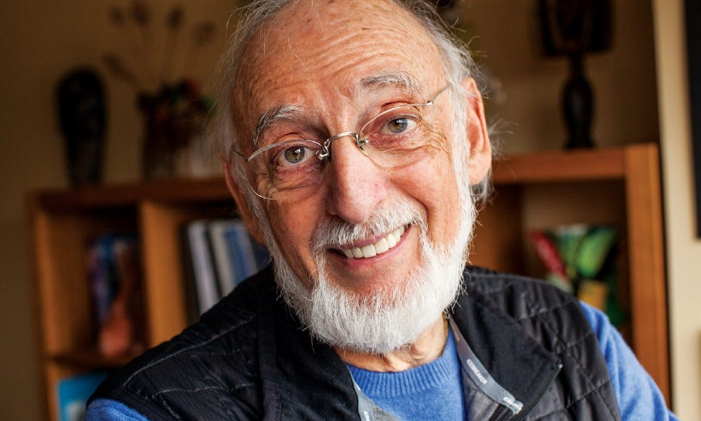

Steven Pinker, a prominent cognitive scientist and linguist, is best known for his work on language and the mind. His research has explored the connections between language, thought, and human nature, making significant contributions to evolutionary psychology.Pinker’s books, such as “The Better Angels of Our Nature” and “How the Mind Works,” have popularized complex ideas about the evolution of human behavior and cognition.
Steven Pinker specializes in visual cognition and developmental linguistics, as well as a number of experimental topics. Pinker has written two technical books that proposed a general theory of language acquisition. In particular, his work with Alan Prince posited that children use default rules sometimes in error but are obliged to learn irregular forms one by one. Pinker is the author of nine books for general audiences. The Language Instinct (1994), How the Mind Works (1997), Words and Rules (2000), The Blank Slate (2002), and The Stuff of Thought (2007) posit that language is an innate behavior shaped by natural selection and adapted to our communication needs. Pinker's The Sense of Style (2014) is a general language-oriented style guide.
more to learn
Daniel Kahneman, a Nobel laureate in economics, is one of the most influential psychologists in the realm of behavioral economics. His groundbreaking book “Thinking, Fast and Slow” outlines the two systems of thinking—fast, intuitive thinking and slow, deliberate thinking—and how they influence our decision-making processes. Kahneman’s work on cognitive biases, heuristics, and the ways people make judgments has had a profound impact on psychology, economics, and public policy.With Amos Tversky and others, Kahneman established a cognitive basis for common human errors that arise from heuristics and biases, and developed prospect theory. In 2011, Kahneman was named by Foreign Policy magazine in its list of top global thinkers. In the same year, his book Thinking, Fast and Slow, which summarizes much of his research, was published and became a best seller. In 2015, The Economist listed him as the seventh most influential economist in the world. Kahneman was professor emeritus of psychology and public affairs at Princeton University's Princeton School of Public and International Affairs. Kahneman was a founding partner of TGG Group, a business and philanthropy consulting company. He was married to cognitive psychologist and Royal Society Fellow Anne Treisman, who died in 2018 more to learn
Angela Duckworth is best known for her research on grit, a combination of passion and perseverance for long-term goals.Duckworth’s book, “Grit: The Power of Passion and Perseverance,” has become a widely acclaimed resource for understanding how resilience and determination contribute to success. Her work emphasizes the importance of effort and persistence, challenging the traditional focus on intelligence or talent as the primary factors in achievement. Duckworth’s contributions have revolutionized education, organizational behavior, and the study of motivation. . more to learn
As one of the founders of positive psychology, Martin Seligman’s work has influenced countless studies on well-being, happiness, and resilience. His concept of learned optimism and his research on happiness have reshaped how we view mental health. Seligman’s ideas have inspired numerous interventions aimed at improving mental health by focusing on strengths, gratitude, and resilience rather than just addressing illness. His influence extends beyond academia, with initiatives that promote well-being in schools, workplaces, and communities.Seligman is the Zellerbach Family Professor of Psychology in the University of Pennsylvania's Department of Psychology. He was previously the Director of the Clinical Training Program in the department, and earlier taught at Cornell University. He is the director of the university's Positive Psychology Center. Seligman was elected president of the American Psychological Association for 1998. He is the founding editor-in-chief of Prevention and Treatment (the APA electronic journal) and is on the board of advisers of Parents magazine. Seligman has written about positive psychology topics in books such as The Optimistic Child, Child's Play, Learned Optimism, Authentic Happiness, and Flourish. His most recent book, Tomorrowmind, co-written with Gabriella Rosen Kellerman, was published in 2023. more to learn
Elizabeth Loftus is a leading figure in the field of memory and cognitive psychology. Her research on the malleability of memory, particularly in the context of eyewitness testimony, has had a profound impact on the legal system. Loftus’s work challenges the reliability of human memory and has led to changes in how eyewitness testimony is handled in courts. Her studies on false memories and the way memories can be altered by suggestion have opened up new pathways for understanding the complex nature of human recollection. From 1970 to 1973, Loftus was employed as a cognitive psychologist at the New School for Social Research in New York City,: 17 after becoming dissatisfied with university work such as calibrating math and word problems for fifth-grade students.: 17 At the time, she had also been investigating semantic memory with Professor Jonathan Freedman at Stanford University.: 17 Loftus was employed at the University of Washington from 1973 to 2001, initially as an assistant professor. She shifted from laboratory work to using "real world" situations of criminal court cases. more to learn

John Gottman is a renowned psychologist known for his research on relationships and marital stability. He has spent decades studying couples and identifying key factors that contribute to the success or failure of relationships. His work has introduced the idea of the “Four Horsemen of the Apocalypse”—four communication patterns that predict divorce, and his methods have been widely adopted in couples therapy. Gottman’s work has not only advanced relationship psychology but also provided practical tools for improving communication and emotional intelligence in relationships. John Gottman was born on April 26, 1942, in the Dominican Republic to Orthodox Jewish parents. His father was a rabbi in pre-World War II Vienna. Gottman was educated in a Lubavitch Yeshiva Elementary School in Brooklyn. Gottman practices Conservative Judaism, keeps kosher (follows Jewish dietary laws) and observes Shabbat. In 1987, he married Julie Schwartz, a psychotherapist. His two previous marriages had ended in divorce.[6] He has a daughter named Moriah Gottman. John and Julie Gottman live in Washington state. more to learn
Bessel van der Kolk is a leading expert on trauma and its effects on mental health, particularly post-traumatic stress disorder (PTSD). His groundbreaking book “The Body Keeps the Score” has become a classic in the field, examining how trauma affects both the mind and body. Van der Kolk has played a crucial role in developing trauma-informed therapeutic practices, influencing how therapists work with individuals who have experienced abuse, neglect, and other forms of trauma. His contributions have been critical in changing the conversation around mental health and trauma, advocating for more holistic and empathetic treatment approaches.Van der Kolk was born in the Netherlands in July 1943. The Hague was occupied by the Nazis at the time and his father was sent to a work-camp. He was the middle child of five. His mother taught her children to play musical instruments. Bessel played piano and cello and was taught six languages. more to learn
Susan Cain is best known for her work on the psychology of introversion. Her book, “Quiet: The Power of Introverts in a World That Can’t Stop Talking,” challenges the cultural preference for extroversion and highlights the strengths and contributions of introverted individuals. Cain’s work has reshaped the way we understand personality and has influenced educational and workplace environments to accommodate different temperaments. Cain’s advocacy for introverts has led to a broader recognition of the value of quiet reflection and the need for diverse personality types in social and professional settings. Cain worked for seven years as an attorney at Cleary Gottlieb Steen & Hamilton, and then as a negotiations consultant as owner and principal of The Negotiation Company. She has been a fellow and a faculty/staff member of the Woodhull Institute for Ethical Leadership, an educational non-profit organization. more to learn
Carol Dweck is a pioneering psychologist known for her research on mindsets and motivation. Her concept of the “growth mindset”—the belief that abilities and intelligence can be developed through hard work, dedication, and learning—has transformed the fields of education and personal development. Her book, “Mindset: The New Psychology of Success,” has become a foundational text for educators, parents, and coaches alike. Dweck’s research has demonstrated that fostering a growth mindset can lead to greater success in learning, performance, and personal growth.In her sixth grade class at the P.S. 153 elementary school in Brooklyn, New York, students were seated in order of their IQ; some responsibilities like erasing the blackboard and carrying the flag were reserved to students with the highest IQs. She later described becoming "increasingly afraid to risk her reputation as one of the most intelligent children in the class". more to learn
Sherry Turkle is a psychologist and sociologist known for her research on the relationship between technology and human interaction. In her books like “Reclaiming Conversation” and “Alone Together”, Turkle explores how digital devices affect our communication and social behavior, particularly the negative consequences of technology on face-to-face interactions. Her work has sparked important discussions about the impact of technology on mental health, relationships, and society, urging us to find a balance between virtual and real-world interactions.In The Second Self, she writes about how computers are not tools as much as they are a part of our social and psychological lives, writing that technology "catalyzes changes not only in what we do but in how we think." She goes on using Jean Piaget's psychology discourse to discuss how children learn about computers and how this affects their minds. The Second Self was received well by critics and was praised for being "a very thorough and ambitious study". more to learn
Richard Davidson is a leading neuroscientist whose work focuses on the brain’s role in emotional regulation, meditation, and well-being. His research on neuroplasticity and the effects of mindfulness meditation has led to a deeper understanding of how practices like meditation can change the brain and improve emotional well-being. Davidson’s work at the Center for Healthy Minds has been instrumental in advancing the science of happiness and well-being. His research continues to shape how we think about mental health, resilience, and the potential of meditation to improve our lives.Born to a Jewish family in Brooklyn, Davidson attended Midwood High School. While there, between 1968–1971, he worked as a summer research assistant in the sleep laboratory at nearby Maimonides Medical Center cleaning electrodes that had been affixed to subjects' bodies for sleep studies. more to learn
Kay Redfield Jamison is a clinical psychologist and psychiatrist whose work has focused on bipolar disorder and mood disorders. She is a leading expert in understanding the emotional and psychological aspects of these conditions, and her autobiographical work, “An Unquiet Mind,” has offered profound insights into living with bipolar disorder. Jamison’s work has been instrumental in reducing stigma around mental illness, especially in relation to mood disorders, and has paved the way for more compassionate and effective treatment.Jamison began her study of clinical psychology at University of California, Los Angeles in the late 1960s, receiving both B.A. and M.A. degrees in 1971. She continued on at UCLA, receiving a C.Phil. in 1973 and a PhD in 1975, and became a faculty member at the university. more to learn